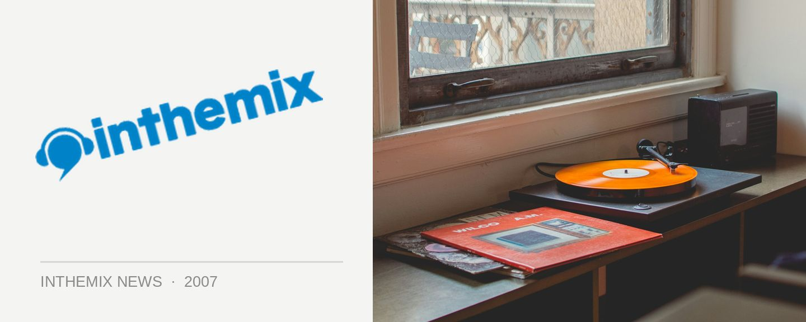

Scott Pullen is Lookin’ Good this weekend
Lookin’ Good returns to Candys Apartment this weekend, featuring a set from one of Australia’s longstanding fixtures on the dance scene. Scott Pullen is a DJ who’s in it for the long haul, having played at the classic RAT parties at the Hordern in the 90’s, been the spinner of choice for a massive range of celebrity parties and major events as well as playing to a crowd of 100,000 at the closing of the Sydney 2000 Olympics in the Domain. He returns to the main room of Lookin’ Good on Saturday.
Also joining him on the night will be Eddie Coulter who will be making his debut, along with Lookin’ Good residents Adam Coverdale and Tom da Silva who will be providing the musical backbone as always.
Check it out at Candys Apartment this Saturday 7th July, set times are below…
Main Room
10.00 – 12.00: Mish
12.00 – 01.30: Tom da Silva
01.30 – 03.00: Scott Pullen
03.00 – 04.30: Adam Coverdale
04.30 – 06.00: Eddie Coulter
Bulletproof Room
11.00 – 01.00: Jay Smalls
01.00 – 03.00: Ben Kelly
03.00 – 05.00: Sam Serene